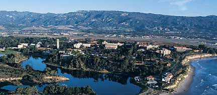

This hotel will be the main conference hotel. Transportation will be provided between UCSB and the Harbor View. There are a block of 35 rooms reserved under the group name "SSDBM." These rooms will be released to the public on May 26, so please reserve soon. Call 1-800-755-0222 for reservations. Room rates should be $145.00 per night. This is a very nice location right on the beach in downtown Santa Barbara. It is about a 15 minute drive to the conference location and a van service will be provided. More info...
The closest and cheapest accomodations to the conference will be the Francisco Torres Residence Hall (map). Francisco Torres is a dormitory type residence accomodation which usually houses 2/3 occupants per room with shared single sex bathrooms and showers on each floor. It is about a mile from the Bren School and a van service will be provided for transportation between Francisco Torres and Bren.
Accomodations are available at Francisco Torres in one of the two following packages only. Online registration for Francisco Torres will be available soon. Prices below are for the entire stay, not per night.
- Arrive Sunday 6/26
- Checkout Wednesday 6/29
- Single Occupancy: $162.39
- Double Occupancy: $115.74
- Arrive Sunday 6/26
- Checkout Thursday 6/30
- Single Occupancy: $216.52
- Double Occupancy: $154.32
If you would rather stay in an area hotel other than The Harbor View or Francisco Torres, rooms have been reserved in the following hotels. Note that you must make your own reservation in these hotels. There will be no SSDBM assisted reservations made. These hotels are farther from the conference site and you may need to provide your own transportation to/from the conference location, although we are currently working on getting van service to these locations. If you have any questions, please contact BJ Danetra (bjdanetra (at) bren.ucsb.edu).
While no rooms have been reserved at this hotel, we are told that a block will open up on May 1. Please check with the hotel directly. This hotel is in a nice location in the heart of downtown Santa Barbara. Call 1-800-727-0876 for reservations. More info...
There are a block of 20 rooms reserved under the group name "SSDBM Bren School." Rooms are $190 + tax. These rooms will be released on May 20 if they are not reserved. The reservation number is 800-338-6722 or 805-683-6722. More info...
Please contact BJ Danetra (bjdanetra (at) bren.ucsb.edu) for more information on lodging.
The University of California, Santa Barbara is a leading research university and one of the 10 University of California main campuses. Located 10 miles west of Santa Barbara, UCSB is easily accessible from the Santa Barbara municipal airport ( SBA) with multiple daily flights from major US cities including Phoenix, Denver, Los Angeles and San Francisco. Santa Barbara is also served by Amtrak and Greyhound.
The UCSB Campus.
Santa Barbara is a community of about 90,000 people located in the middle of the Southern California Bight, a section of south facing coastline bordered by Point Conception to the west and the town of Carpenteria to the east. Santa Barbara offers world class coastal hotels, dining and recreation. Recreation opportunities includes swimming, hiking, birding, surfing, mountain biking, rock climbing, sea kayaking, wine tasting, diving and boating. The Santa Barbara Channel Islands, including Channel Islands National Park, are just a short boat ride across the channel where you can have the opportunity to experience coastal Southern California as it was 150 years ago.

Santa Barbara from the air over the channel.
Here are a few web sites available to help you plan activities while in Santa Barbara.
- SantaBarbara.com
- SantaBarbaraCA.com
- Santa Barbara Chamber of Commerce
- Santa Barbara County Wineries and Vineyards
- Biking in Santa Barbara
- Museums in the Santa Barbara area
- Search Google for Santa Barbara